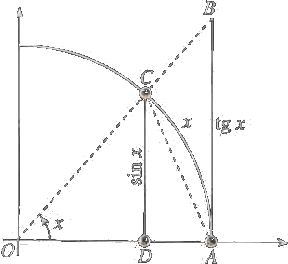

Limiti notevoli
Vediamo ora alcune comuni tecniche di calcolo dei limiti che, combinando i teoremi generali sui limiti con l'uso di alcuni limiti notevoli che riguardano certe funzioni elementari, risultano piuttosto potenti. Tale strategia permette di risolvere ampie gamme di limiti che presentano forme di indecizione.
Limiti notevoli di seno e coseno
Proposition 4.10.1 Vogliamo dimostaare l'identità seguente che si presenta sotto forma di indecisione 0/0.
Dim. Osserviamo subito che, essendo sin x e x funzioni dispari, sin x/x è funzione pari, quindi è sufficiente calcolare limx → 0+ sinx/x. We use Theorem 4.1.8 to show that the right-hand and left-hand limits are both 1. Observe that sin x and x are both odd functions. Therefore f(x) = (sin x) / x is an even function, with a graph symmetric about the y-axis. This symmetry implies that the left-hand limit at 0 if exits is equal to the right-hand limit.
we shall focus on the right-hand limit. Take a look at the followin diagram:
The are of the triangle OCA is less than that of the circular sector OCA which in turn is less than that of the triangle OBA. We can express the areas as
Area ΔOPA = 1/2 ⋅ base ⋅ height = 1/2 ⋅ 1 ⋅ sin x
Area sector OCA (radius r) = 1/2 ⋅ r2 x = x/2
Area ΔOBA = 1/2 ⋅ base ⋅ height = 1/2 ⋅ 1 ⋅ tg x
It follows that:
sin x/2 < x/2 < tg x/2
that is
sin x < x < tg x
dividing by sin x, we have:
1 < x / sin x < 1/ cos x
Taking reciprocals reverses the inequalities:
1 > sin x/x > cos x
Since limx ⟶ 0+ cos x = 1, the sandwich theorem gives
■
Proposition 4.10.2 We have that
Proof. From the definition of tangent
Proposition 4.10.3 We have that
Proof. We have that
Definition 4.10.4 (Asymptotic comparison) We say that f ~ g as x ⟶ x0 if the limit of the ratio of the two function is 1, that is
The limits we have studied can be written with this notation as
sin x ~ x 1 − cos x ~ x2/2 ex − 1 ~ x log(1 + x) ~ x
Prolungamento per continuità di una funzione
In base al limite notevole dimostrato, la funzione f(x) = sin x/x, inizialmente non definita per x = 0, può essere prolungata per continuità anche in x = 0, ponendo
La funzione così definita risulta continua anche in x = 0.
Più in generale: se una funzione f(x) non è definita in x0 ma esiste finito
la funzione può essere prolungata per continuità anche in x0, ponendo per definizione f(x0) = ℓ.
Lo studente si convinca del fatto che se invece la funzione f possiede in x0 una discontinuità a salto, un asintoto verticale, o comunque non ammette limite finito, non è possiibile renderla continua in x0 alterandone la definizione in un punto solo.
Ogni volta che una fuznione, inizialmente non definita in x0, risaulti essere prolungabile con continuità in x0, si sottointende che la funzione sia state effettivamente prolungata.
Limite di (1 + 1/x)x per x → ± ∞ e altri limiti notevoli collegati
Già sappiamo dal Teorema 3.4.3 che per ogni succesisone {an} divergente a +∞ o −∞ si ha
Questo fatto, per la definizione successionale di limite di funzione, implica immediatamente che:
Da tale limite se ne possono dedurre altri.
Passando ai logaritmi si ottiene
perché la funzione log x è continua.
Se si pone y = 1/x, x → ± ∞ equivale a y → 0± e l'ultimo limite si può scrivere nella forma seguente
e se in quest'ultima poniamo y = ex − 1, allora y → 0 equivale a x → 0, e sostituendo si ricava
o, meglio:
Se invece si pone y = (1 + x)α − 1, con α esponente reale qualsiasi, allora x → 0 equivale ad y → 0, e si ha
e poichè anche log (1 + x)/x → 1, se ne deduce: